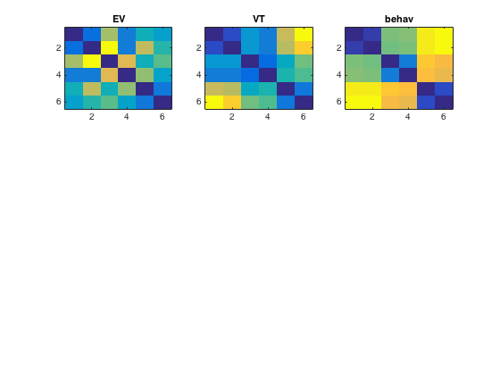
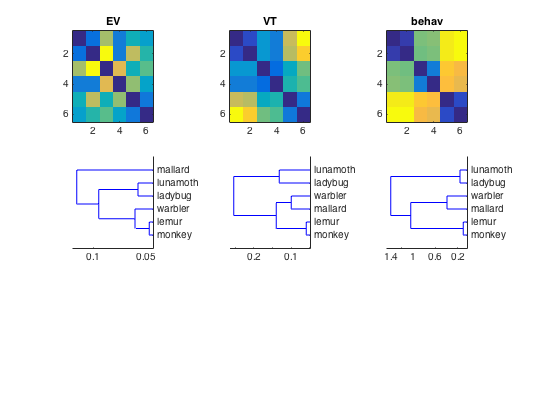
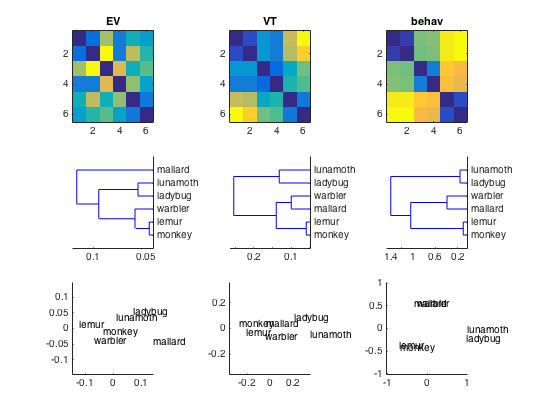

RSA Visualize
- For CoSMoMVPA's copyright information and license terms, #
- see the COPYING file distributed with CoSMoMVPA. #
Contents
Load data in EV and VT mask
load datasets cosmo_fmri_dataset
config=cosmo_config(); data_path=fullfile(config.tutorial_data_path,'ak6','s01'); data_fn=[data_path '/glm_T_stats_perrun.nii']; targets=repmat(1:6,1,10)'; ev_ds = cosmo_fmri_dataset(data_fn, ... 'mask',[data_path '/ev_mask.nii'],... 'targets',targets); vt_ds = cosmo_fmri_dataset(data_fn, ... 'mask',[data_path '/vt_mask.nii'],... 'targets',targets); % compute average for each unique target, so that the datasets have 6 % samples each - one for each target vt_ds=cosmo_fx(vt_ds, @(x)mean(x,1), 'targets', 1); ev_ds=cosmo_fx(ev_ds, @(x)mean(x,1), 'targets', 1); % remove constant features vt_ds=cosmo_remove_useless_data(vt_ds); ev_ds=cosmo_remove_useless_data(ev_ds); % Use pdist (or cosmo_pdist) with 'correlation' distance to get DSMs % in vector form. Assign the result to 'ev_dsm' and 'vt_dsm' % >@@> ev_dsm = pdist(ev_ds.samples, 'correlation'); vt_dsm = pdist(vt_ds.samples, 'correlation'); % <@@< model_path=fullfile(config.tutorial_data_path,'ak6','models'); load(fullfile(model_path,'behav_sim.mat')); behav_dsm=squareform(behav); % Using matlab's subplot function place the heat maps for EV, VT % and behaviour DSMs side by side in the top three positions of a 3 x 3 % subplot figure. % (Hint: to convert DSMs in vector form to matrix form (and vice versa), % using cosmo_squareform or squareform). % >@@> figure(); subplot(3,3,1); imagesc(squareform(ev_dsm)); title('EV'); subplot(3,3,2); imagesc(squareform(vt_dsm)); title('VT'); subplot(3,3,3); imagesc(squareform(behav_dsm)); title('behav'); % <@@< labels = {'monkey','lemur','mallard','warbler','ladybug','lunamoth'}';
Add the dendrograms for EV, LV and behav in the middle row of the
subplot figure (this requires matlab's stats toolbox)
if cosmo_check_external('@stats',false) % First, compute the linkage using Matlab's linkage for % 'ev_dsm', 'vt_dsm' and 'behav_dsm'. Assign the result % to 'ev_hclus', 'vt_hclus', and 'behav_hclus' % >@@> ev_hclus = linkage(ev_dsm); vt_hclus = linkage(vt_dsm); behav_hclus = linkage(behav_dsm); % <@@< subplot(3,3,4); % show dendrogram of 'ev_hclus' % As additional arguments to the dendrogram function, use: % 'labels',labels,'orientation','left' % >@@> dendrogram(ev_hclus,'labels',labels,'orientation','left'); % <@@< % Using the same approach, show a dendrogram of 'vt_hclus' subplot(3,3,5); % >@@> dendrogram(vt_hclus,'labels',labels,'orientation','left'); % <@@< % Using the same approach, show a dendrogram of 'behav_hclus' subplot(3,3,6); % >@@> dendrogram(behav_hclus,'labels',labels,'orientation','left'); % <@@< else fprintf('stats toolbox not present; cannot show dendrograms\n'); end
Show the MDS (multi-dimensional scaling) plots in the bottom row
% Show early visual cortex model similarity subplot(3,3,7); % get two-dimensional projection of 'ev_dsm' dissimilarity using cmdscale; % assign the result to a variable 'xy_ev' % >@@> xy_ev = cmdscale(squareform(ev_dsm)); % <@@< % plot the labels using the xy_ev labels text(xy_ev(:,1), xy_ev(:,2), labels); % adjust range of x and y axes mx = max(abs(xy_ev(:))); xlim([-mx mx]); ylim([-mx mx]); % Show VT similarity % using cmdscale, store two-dimensional projection of 'vt_dsm' and % 'behav_dsm' in 'xy_vt' and 'xy_behav' % >@@> xy_vt = cmdscale(squareform(vt_dsm)); xy_behav = cmdscale(squareform(behav_dsm)); % <@@< subplot(3,3,8); text(xy_vt(:,1), xy_vt(:,2), labels); mx = max(abs(xy_vt(:))); xlim([-mx mx]); ylim([-mx mx]); subplot(3,3,9); text(xy_behav(:,1), xy_behav(:,2), labels); mx = max(abs(xy_behav(:))); xlim([-mx mx]); ylim([-mx mx]);